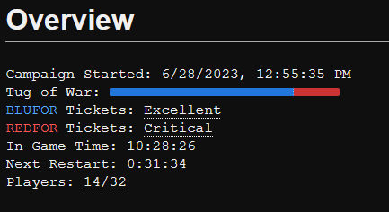
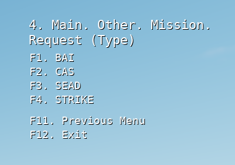
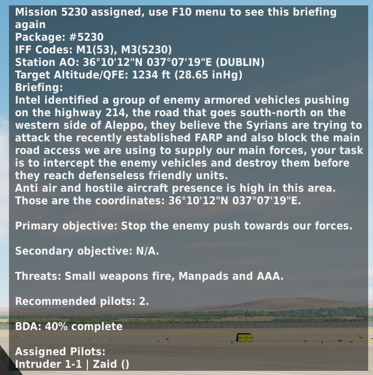

Flashpoint Levant
Flashpoint Levant is a DCS World PvE server. It features a late Cold War persistent campaign which challenges players to complete a variety of air missions over the course of multiple real-time days.
Connecting to the Server
The servers require you to use the Open Beta version of DCS World. You can find the servers in the in-game server browser under the name "Flashpoint Levant". One server is in North America and another is in Europe. Each hosts a separate persistent instance of the mission. The password is available in the Server Details page on the website.
If there's a problem with the server browser, you can find direct connection details in the Server Details page.
The server requires DCS: Syria. The free Community A-4E-C is supported and recommended, but is not required.
Setting
Flashpoint Levant is set in a fictional conflict in an alternate 1989. Syria (supported by the Soviet Union) has invaded and occupied Lebanon, resulting in a blockade and force buildup by the US, UK and their allies. At the start of each campaign, fighting breaks out near Syria's northern border with Turkey. The players complete missions to support the ground campaign push south, with the eventual goal of defeating the Syrian forces in Damascus.
Objectives
The players win in one of two ways:
- Complete enough strike missions to unlock the final strike on Damascus and successfully complete the final strike.
- Deplete the enemy tickets to zero (i.e complete enough missions other than the final strike)
The players lose if their tickets are depleted to zero (i.e. the players lose too many aircraft).
Ticket System
Each side has a number of tickets. If either side's tickets fall to zero, the campaign ends in the opposing side's victory.
The players lose tickets when a player's aircraft is either destroyed or disconnects without returning to a friendly airbase, FARP or carrier. The players regain tickets by completing missions.
The enemy loses tickets when the players complete missions.
You can see the number of remaining tickets in the Campaign Status page.
Mission System
Missions are available through the Communications menu. Completing these missions advance the ground campaign, degrade enemy defenses or work towards unlocking the final strike.
Missions are categorized into types. Each aircraft has access to a limited set of mission types.
You can request a mission in one of two ways:
Communication menu,F10. Other...,F4. Mission...,F1. Request (Type)...presents a selection of mission types. Selecting a type will assign the top priority unassigned mission of that type.
Communication menu,F10. Other...,F4. Mission...,F2. Request (List)...presents a list of the overall top priority unassigned missions to select.

Assigned missions are removed from the mission request menu. To join a friend's assigned mission, input their four-digit mission code via Communication menu, F10. Other..., F4. Mission..., F4. Join (Input Code)...
The mission briefing provides key information including the location of the mission, a description of the target and warnings about known threats. You can show the mission briefing via Communication menu, F10. Other..., F4. Mission..., F1. Briefing

The mission status shows what percentage of the mission completion threshold has been reached. This is useful to tell if you've destroyed enough of the targets to complete the mission. You can show the mission status via Communication menu, F10. Other..., F4. Mission... F2. Status
You can extend a mission's timer by 30 minutes via Communication menu, F10. Other..., F4. Mission..., F4. Rolex +30. There is no penalty for extending a timer. Use it as needed on long missions.
You can abort a mission via Communication menu, F10. Other..., F4. Mission..., F3. Abort. There is no penalty for aborting a mission. It will be returned to the mission list and can be selected by any player.
Mission Types
Anti-Ship
Anti-ship missions are about destroying enemy naval assets. These are a good fit for aircraft that can carry anti-ship weapons like the AGM-65F/K and AGM-84D.
Armed Recon
Armed Recon missions are about attacking light enemies such as motorized infantry and light air defenses. These are a good fit for helicopters and ground attack aircraft. Completing Armed Recon missions allows ground forces to advance and secure the area.
Battlefield Air Interdiction (BAI)
BAI missions are about searching and destroying enemy supply, logistic and fire support assets including supply points, convoys, artillery and Scud missiles. These missions usually require searching a large area such as a grid square or highway. Completing BAI missions allows ground forces to advance and secure the area.
Combat Air Patrol (CAP)
CAP missions are about protecting friendly aircraft from enemy aircraft. CAP missions are completed when all other missions in their area are complete.
ℹ️ You don't need to accept a CAP mission to provide CAP. The CAP missions are purely informational on what areas of the map still have missions to complete.
Close Air Support (CAS)
CAS missions are about engaging enemy ground forces in direct contact with friendly forces. These missions sometimes use DCS' JTAC and nine-line system. Target identification is critical to avoid friendly fire. Completing CAS missions allows ground forces to advance and secure the area.
Combat Search and Rescue (CSAR)
Whenever a player ejects from their aircraft, a CSAR mission is generated. An NPC pilot is left behind at the site of ejection. Players flying transport helicopters can pick up the pilot and return them to certain friendly bases to regain tickets.
ℹ️ CSAR rescues have to be returned to one of the starting bases; returning to Hatay won't complete the mission.
Suppression of Enemy Air Defense (SEAD)
SEAD missions are about degrading and destroying the enemy's air defense network. Flashpoint Levant uses a networked air defense script. Enemy radars and SAM sites will act as a coordinated air defense network that must be picked apart. These missions are a good fit for fast aircraft that can carry anti-radiation missiles, the ADM-141 TALD, cluster bombs and high-drag bombs.
Strike
Strike missions are about destroying strategic targets like facilities and command centers. These missions are a good fit for fast air-to-ground or multirole aircraft. Completing strike missions eventually unlocks the final strike mission.
Loadout System
Flashpoint Levant enforces a limited loadout system. Each aircraft has a limited number of points to "spend" on payload. If you attempt to takeoff with too many points spent, a script will increase the weight of your aircraft and you will fall out of the sky.
ℹ️ Aircraft which can carry laser guided weapons, but cannot carry a targeting pod, have increased points to spend on air to ground weapons. Slower aircraft focused exclusively on ground attack also have increased points to spend on air to ground weapons.
The exact point limits and costs are listed in the mission briefing slides. General rules:
- Types of weapons that were not deployed by 1989 are generally not available. This includes:
- Most active radar guided missiles
- AIM-120 AMRAAM
- R-77 (Adder)
- SD-10 (Adze)
- The AIM-9X variant of the AIM-9 Sidewinder
- GPS guided weapons
- Glide bombs
- Cruise missiles
- Sensor Fuzed Weapon
- APKWS
- Most active radar guided missiles
- The AIM-54 Phoenix has a high cost
- Guided air to ground weapons have a high cost
- Semi-active radar guided missiles have a moderate cost
- Cluster bombs have a moderate cost
- Most infrared guided missiles are free
- Unguided bombs and rockets are free
You can check your current point spend when on the ground at a friendly base by pressing Communication menu, F10. Other..., F3. Check Payload. You should always check your payload before departure.
Capturing Airbases
When certain ground missions are completed in an area, friendly ground forces will advance and capture airbases. You can check the status of these airfields using Communication Menu, F10. Other..., F2. Theater Update.
Hatay begins as hostile and is converted to a friendly forward airbase when captured. Players do not lose tickets if they disconnect after landing at a friendly Hatay. This base is useful as an emergency divert field and forward rearming base.
Other enemy bases such as Aleppo, Bassel al-Assad and Abu al-Duhur are converted to neutral airfields. They can be used for refueling, but players lose tickets if they disconnect at these bases.
ℹ️ Captured airbases are not necessarily safe to land at. If the ground missions in the area have not yet been completed, there may be MANPADS waiting to attack aircraft descending on approach. Enemy aircraft may also attack the runway, leaving craters that make landing and takeoff more challenging. Exercise caution when approaching any forward airfield.
Web Tools
The website provides useful tools:
- Campaign status, including ticket count, remaining mission count and time to next mission restart
- ACMI files for review in TacView
- Sneaker GCI, a free GCI/map tool